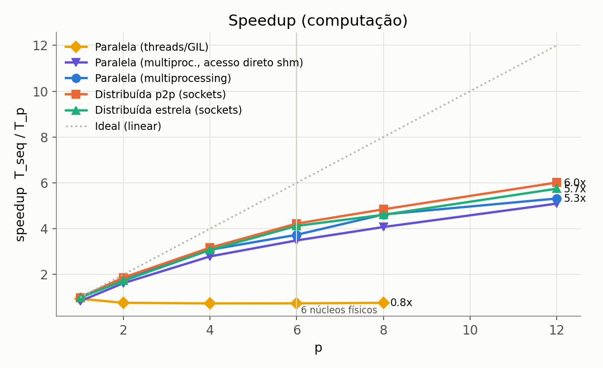
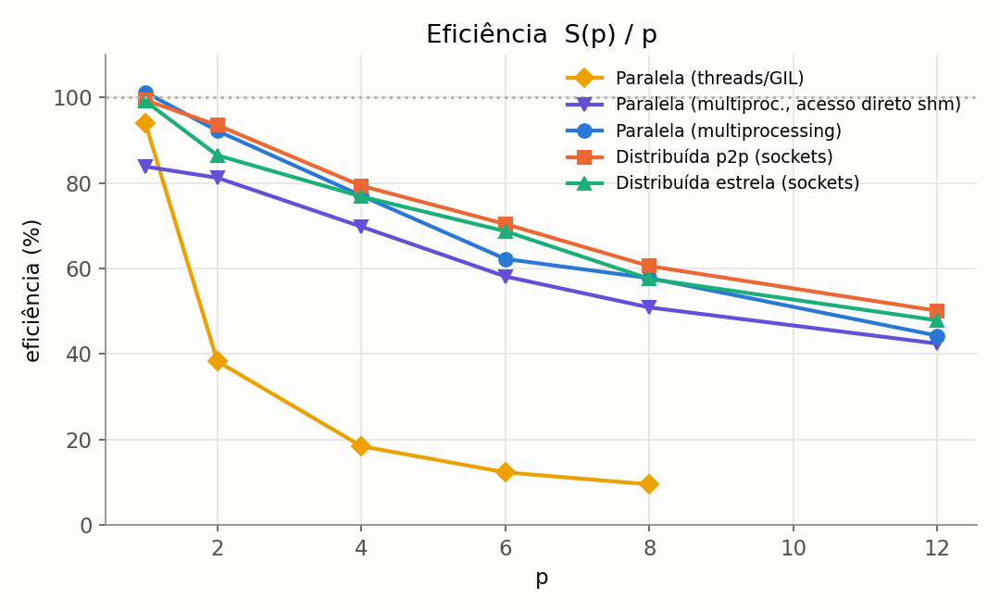
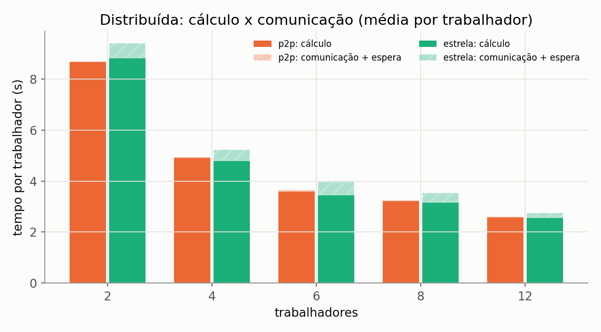
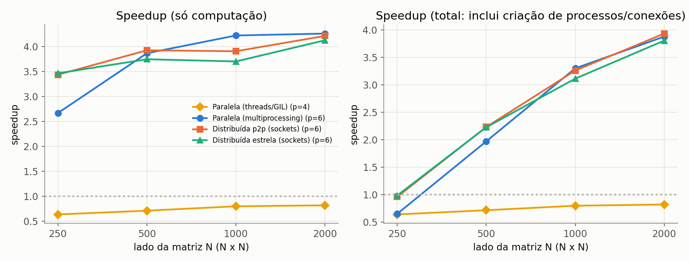
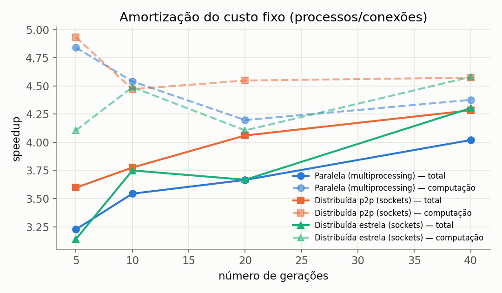
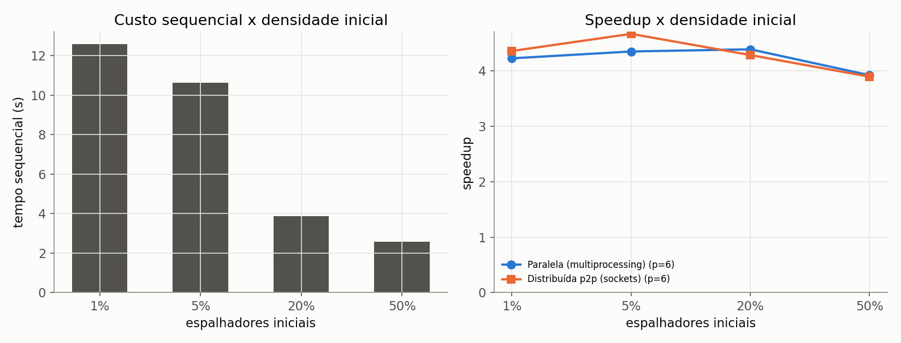
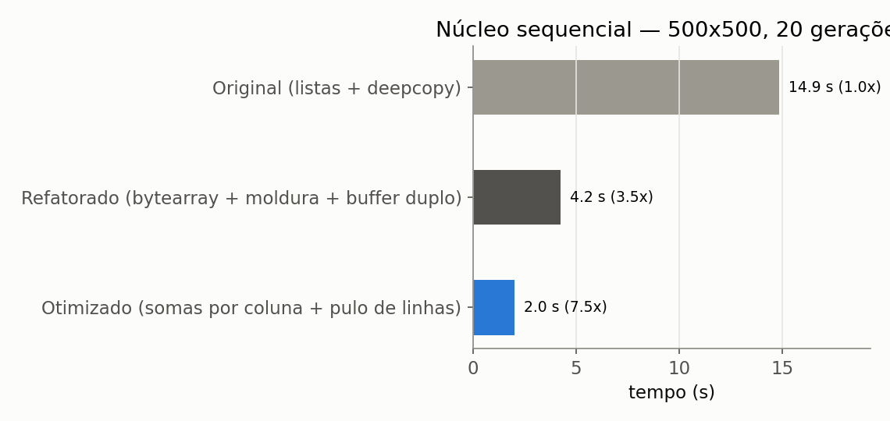
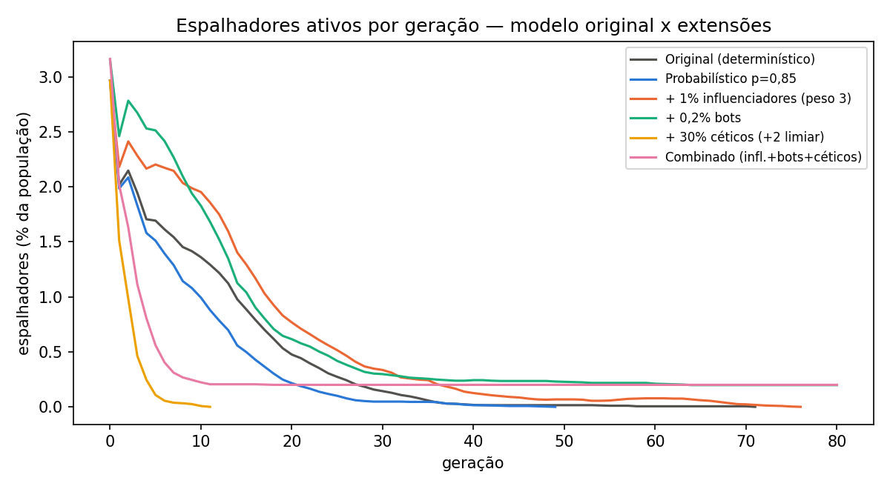
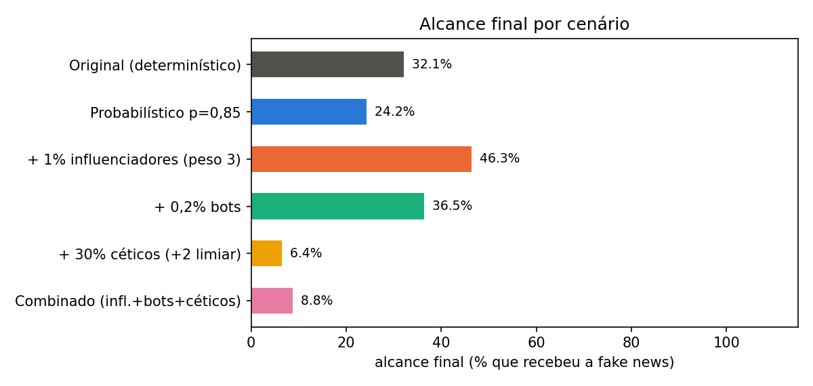
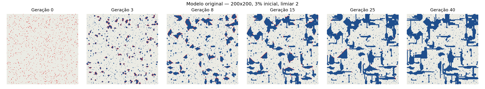

EC48A · Desenvolvimento Paralelo e Distribuído · UTFPR · 2026/2
Da simulação sequencial às versões com threads, multiprocessing e sockets TCP
Grupo 05
Carlos Haruhiko Iwata Junior — RA 1632752
Leonardo Freitas dos Santos — RA 2465302
Matheus Mondaini Alegre de Miranda — RA 2504219
Vinicius Henrique de Oliveira Silva — RA 2525925
Novembro de 2026
0 Ignorante — ainda não acredita
1 Espalhador — acredita e compartilha
2 Inativo — sabe, mas não compartilha mais
X tem 3 vizinhos espalhadores.
Com limiar 2 ou 3 → X vira espalhador.
Ponto-chave para paralelizar: cada célula depende só dos 8 vizinhos da geração anterior → a grade pode ser dividida em blocos independentes, sincronizando apenas as bordas.
deepcopy da grade inteira a cada geração0 ≤ ni < linhas por célularandom.seed) → grade idêntica# índice da célula real (i, j) numa grade com moldura de largura W = C + 2 x = (i + 1) * W + (j + 1) k = (src[x-W-1]==1) + (src[x-W]==1) + (src[x-W+1]==1) + (src[x-1]==1) + (src[x+1]==1) \ + (src[x+W-1]==1) + (src[x+W]==1) + (src[x+W+1]==1) # 8 vizinhos, sem if de borda4
Todas as versões chamam o mesmo kernel:
def kernel(src, dst, W, C, r0, r1, ctx, geracao): # calcula a geração g+1 das linhas [r0, r1) # lê só src, escreve só dst[r0:r1] return (ignorantes, espalhadores, inativos)
kernel(..., 1, L+1) — a grade inteiradst ⇒ sem condição de corridareferencia — célula a célula, fiel ao original (usado nos experimentos de escalabilidade: carga uniforme, CPU-bound)
otimizado — soma por colunas: col[j] = cima+meio+baixo; vizinhos = col[j-1]+col[j]+col[j+1] (3 somas em vez de 8 comparações) e pulo de linhas sem espalhadores
estendido — modelo com probabilidade, influenciadores, bots e céticos
dividir_linhas()threadingdef trabalhador(t, inicio, fim): r0, r1 = inicio + 1, fim + 1 for g in range(cfg.geracoes): src = buffers[g % 2] # leitura dst = buffers[(g + 1) % 2] # escrita parciais[g+1][t] = kernel(src, dst, W, C, r0, r1, ctx, g) barreira.wait() # fim da geração if parar and sum(p[1] for p in parciais[g+1]) == 0: break # todas decidem igual
No CPython 3.11 só uma thread executa bytecode por vez → correto, mas sem ganho em código CPU-bound (Beazley, 2010). Com Python 3.13t (PEP 703) o mesmo código escalaria.
multiprocessing paralelismo realRawArray('q') com posição exclusiva por (geração, processo)# processo pai shms = [SharedMemory(create=True, size=tam) for _ in range(2)] shms[0].buf[:tam] = grade barreira = ctx.Barrier(n) contagens = ctx.RawArray("q", (G+1)*n*3) procs = [ctx.Process(target=_trabalhador, args=(p, ini, fim, ..., barreira)) for p, (ini, fim) in enumerate(faixas)] # processo filho buffers = [shm.buf[:tam] for shm in shms] for g in range(G): c = kernel(buffers[g%2], buffers[(g+1)%2], W, C, r0, r1, ctx, g) contagens[...] = c barreira.wait()
Funciona em várias máquinas: coordenador --porta 5000 numa, trabalhador --host IP nas demais.
| Aspecto | Threads | Processos | Distribuída |
|---|---|---|---|
| Memória | compartilhada (mesmo processo) | shared_memory (SO) | privada por trabalhador |
| Fronteira | lida do buffer de leitura | lida do buffer de leitura | mensagem TCP (1 linha p/ cada vizinho) |
| Fim de geração | threading.Barrier | multiprocessing.Barrier | recv bloqueante dos halos (barreira local entre vizinhos) |
| Evita corrida | buffer duplo + faixas disjuntas | buffer duplo + faixas disjuntas | não há memória compartilhada |
| Parada global | soma replicada após a barreira | soma replicada após a barreira | redução no coordenador (allreduce) |
| Custo por geração | 1 barreira | 1 barreira entre processos | 2 msgs de borda + 1 contagem (+1 resposta) |
Modelo probabilístico sem perder a consistência: random.random() depende da ordem de visita, que muda com a partição. Usamos um gerador baseado em contador (SplitMix64; Salmon et al., SC'11): u = hash(semente, geração, índice_global) → o mesmo sorteio em qualquer divisão da matriz.
tests/test_equivalencia.py (unittest, 8 testes)FakeNews.criar_grade do professorFakeNews.py original, gerações completas> python -m unittest discover -s tests -v test_distribuido ... ok test_mais_trabalhadores_que_linhas ... ok test_processos ... ok test_sequencial_igual_original ... ok test_threads ... ok test_divisao_de_linhas ... ok test_grade_inicial_igual_original ... ok test_uniforme ... ok --------------------------------------- Ran 8 tests in 11.2s OK
| Item | Valor |
|---|---|
| Processador | Intel Xeon E5-2620 v3 @ 2,40 GHz (Haswell-EP) |
| Núcleos | 6 físicos / 12 lógicos (Hyper-Threading) |
| Memória RAM | 16 GB (15,8 GB utilizáveis) |
| Sistema operacional | Windows 10 Home 22H2 (build 19045), 64 bits |
| Linguagem | Python — CPython 3.11.5 (MSC v.1936, 64 bits, com GIL) |
| Bibliotecas | só biblioteca padrão; matplotlib 3.10 / Pillow 12 apenas para gráficos |
| Ambiente | execução local; distribuída via TCP loopback (127.0.0.1), 1 processo por trabalhador |
--sem-parada (todas as gerações calculadas), limiar 2, semente 42
Distribuída p2p, 12 trabalhadores (2,70 s)

| Versão | p | T (s) | S | E | e (KF) |
|---|---|---|---|---|---|
| Multiprocessing | 2 | 8,82 | 1,84 | 92% | 0,085 |
| 6 | 4,36 | 3,73 | 62% | 0,121 | |
| 12 | 3,06 | 5,32 | 44% | 0,114 | |
| Distrib. p2p | 2 | 8,70 | 1,87 | 93% | 0,070 |
| 6 | 3,85 | 4,22 | 70% | 0,084 | |
| 12 | 2,70 | 6,01 | 50% | 0,090 | |
| Distrib. estrela | 2 | 9,41 | 1,73 | 86% | 0,157 |
| 6 | 3,94 | 4,12 | 69% | 0,091 | |
| 12 | 2,83 | 5,75 | 48% | 0,099 | |
| Threads | 4 | 22,02 | 0,74 | 18% | — |
Karp-Flatt entre 0,07 e 0,16, sem crescer com p: a perda não vem de um gargalo serial que cresce com p, mas de custos fixos (sincronização, cópias) e da saturação do hardware (6 núcleos físicos, banda de memória).
14Com 2–8 threads o tempo piora de 16,3 s para ≈ 21–22 s: só uma thread executa bytecode por vez e a troca do GIL entre threads (a cada 5 ms) adiciona contenção.
A versão com threads está correta (testes) e vale para Python free-threaded 3.13t ou para Java; aqui a solução foi multiprocessing.
1ª versão: kernel lendo direto do memoryview da shared_memory → com p = 1 era 19% mais lento que o sequencial.
Correção: a cada geração o processo copia sua faixa + 2 linhas de halo para um bytearray local, calcula e grava de volta só suas linhas.
| p | direto (s) | cópia local (s) | ganho |
|---|---|---|---|
| 1 | 19,40 | 16,07 | 1,21× |
| 6 | 4,66 | 4,36 | 1,07× |
| 12 | 3,19 | 3,06 | 1,04× |
Por que a distribuída local supera o multiprocessing? Ela já trabalha em memória privada e, sem parada automática, cada trabalhador só sincroniza com os vizinhos (sem barreira global com 12 processos), absorvendo pequenos desbalanceamentos.
15
TCP_NODELAY, mensagens binárias, sem resposta do coordenador quando a parada está desligada
Só computação: speedup já é 2,7–3,5× em 250²; cresce até 4,3× (processos) e 4,2× (p2p) em 2000².
Total: em 250² o paralelismo não compensa (0,65×) — criar 6 processos no Windows custa ≈ 0,5 s. Em 2000² chega a 3,9×. (Lei de Gustafson: problemas maiores escalam melhor.)


Mais gerações amortizam o custo fixo: speedup total do multiprocessing sobe de 3,2× (5 ger.) para 4,0× (40 ger.); p2p de 3,6× para 4,3×.
Mais espalhadores iniciais = menos trabalho: só ignorantes contam vizinhos, e a população fica inativa rápido (12,6 s → 2,6 s). O speedup fica estável (≈ 4×) porque o trabalho se distribui uniformemente.

| Kernel otimizado + multiproc. | T (s) | S | E |
|---|---|---|---|
| 1 (sequencial) | 7,91 | 1,00 | 100% |
| 2 processos | 3,63 | 2,18 | 109% |
| 4 processos | 2,02 | 3,91 | 98% |
| 6 processos | 1,55 | 5,11 | 85% |
| 8 processos | 1,40 | 5,67 | 71% |
1000², 20 gerações. Eficiência > 100% em p = 2: cada processo trabalha numa faixa menor, que cabe melhor nas caches.
| Extensão | Regra |
|---|---|
| Probabilidade | convence com P(k) = 1 − (1 − p)k (k contatos independentes) |
| Influenciadores | contam como 3 vizinhos quando espalham (Cha et al., 2010) |
| Bots | espalham sempre, nunca ficam inativos (Shao et al., 2018) |
| Céticos | limiar + 2 — resistência/“vacina” (Lewandowsky 2012; van der Linden 2017) |
Mesmo kernel em todas as versões; sorteio por gerador de contador ⇒ resultados idênticos na sequencial, threads, processos e distribuída. Custo: 1,75× o do modelo base, mas o speedup aumenta (4,5× com p = 6) — mais cálculo por byte comunicado.


| Cenário (10 sementes) | Alcance médio | Desvio |
|---|---|---|
| Original determinístico | 32,1% | — |
| Probabilístico p = 0,85 | 23,6% | 2,5 |
| + 1% influenciadores | 43,5% | 3,7 |
| + 0,2% bots | 35,0% | 2,8 |
| + 30% céticos | 6,1% | 0,2 |
| Combinado | 8,4% | 0,3 |

1% de influenciadores quase dobra o alcance; 30% de céticos o derruba para ~6%: educação midiática pesa mais que bots. Animação: experimentos/figuras/animacao.gif.
random dependia da ordem de visita → gerador baseado em contador (SplitMix64)memoryview antes de fechar a shared_memory--sem-parada); mediana de 3 repetições| # | Melhoria | Justificativa / evidência |
|---|---|---|
| 1 | Modelo probabilístico com gerador de contador | contatos independentes; resultado idêntico em qualquer partição (Salmon et al., 2011) |
| 2 | Influenciadores digitais (peso 3) | alcance 24% → 44% com só 1% da população |
| 3 | Bots automatizados | fonte persistente: a propagação nunca se extingue |
| 4 | Resistência à propagação (céticos) | alcance 24% → 6% com 30% de céticos |
| 5 | Otimizações do núcleo (moldura, buffer duplo, somas por coluna) | 3,5× a 7,5× sobre o original, resultado idêntico |
| 6 | Redução de comunicação: p2p + sobreposição cálculo/comunicação | comunicação 0–1,7% (p2p) vs 6–13% (estrela) |
| 7 | Cópia local faixa + halo no multiprocessing | gargalo medido e corrigido: até 1,21× |
| 8 | Visualização (GIF, mosaicos) e estatísticas adicionais | pico, geração do pico, alcance, taxa de crescimento, Monte Carlo com 10 sementes |
| 9 | Testes automatizados de equivalência | 8 testes; SHA-256 idêntico nas 330 execuções |
| Integrante | Responsabilidades |
|---|---|
| Matheus Mondaini Alegre de Miranda RA 2504219 | Refatoração sequencial, núcleo modelo.py e kernels otimizados; versão distribuída com sockets (protocolo, p2p/estrela, halo); testes de equivalência; slides |
| Leonardo Freitas dos Santos RA 2465302 | Versões paralelas (threads e multiprocessing), sincronização por barreira e correção do gargalo de memória compartilhada; experimentos, gráficos e análise de desempenho; extensões do modelo |
| Vinicius Henrique de Oliveira Silva RA 2525925 | Apresentação da análise de desempenho (speedup, eficiência, custo de comunicação) |
| Carlos Haruhiko Iwata Junior RA 1632752 | Apresentação das extensões do modelo (probabilidade, influenciadores, bots, céticos) |
IA generativa (Claude, Anthropic) foi usada como apoio na implementação e na documentação — ver referências.
25